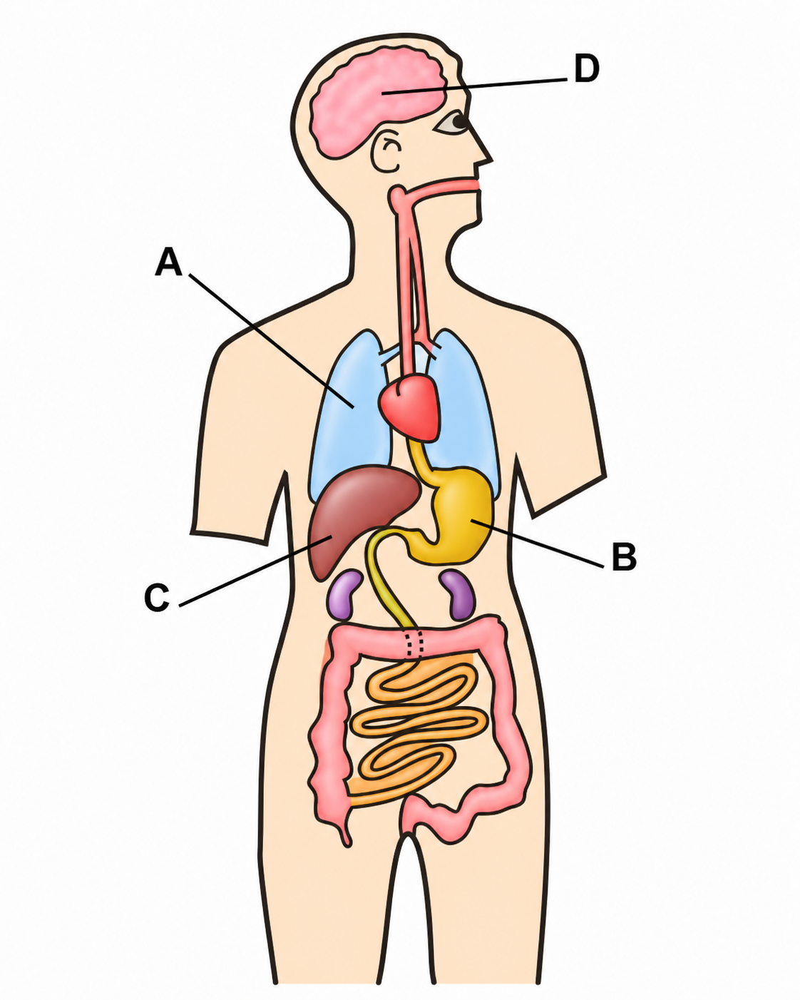
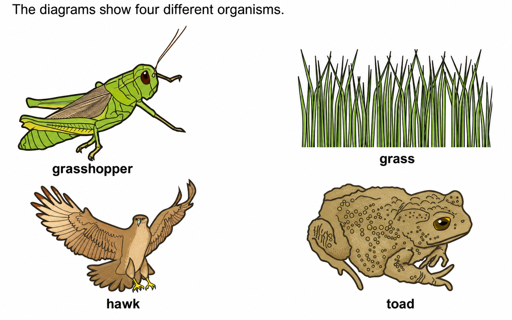
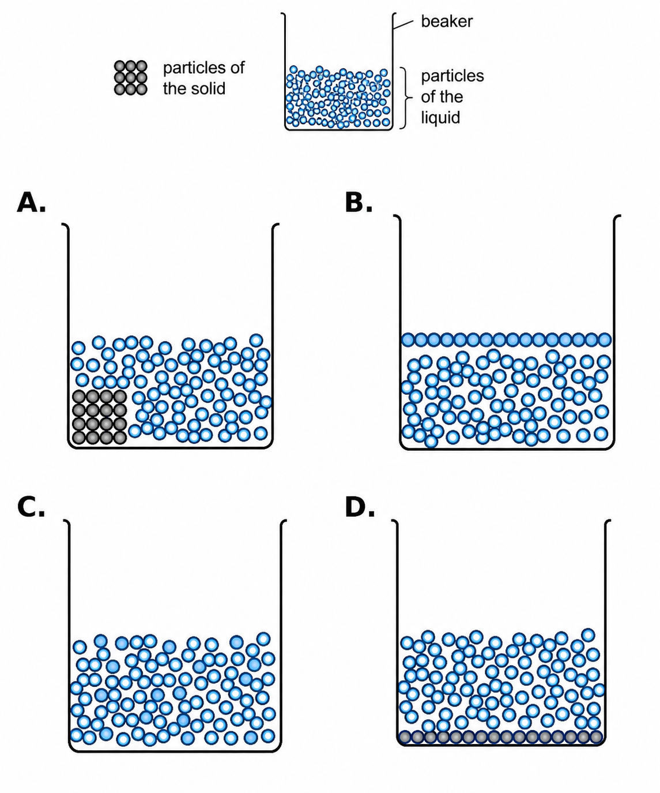

Year 8 Entry Assessment
- Parts A and B: choose the one option that you think is correct.
- Parts C and D: type your answers into the boxes provided.
- Read each table or diagram carefully before answering.
Vocabulary
Questions 1–10: choose the one correct option. (1 mark each)
Look at the diagram of organs in the human body. What is the name of organ A?

Which gas enters the body when a person breathes in?
Which system breaks down food into nutrients?
A material that allows light to pass through clearly is called:
A material that does not allow light to pass through is called:
A substance that can dissolve in water is:
The liquid that dissolves a solid is called the:
A pure substance made from only one type of atom is an:
Which force opposes motion and can slow a moving object?
Which force pulls objects towards the Earth?
Core Concepts
Questions 11–25: choose the one correct option in each question. (1 mark each)
Look at the organisms. Which organism is a producer?

Which order is correct from largest to smallest?
Which nutrient is mainly needed for growth and repair of body tissues?
Food stores energy for living things. What type of energy is stored in food?
Which statement about particles in a solid is correct?
When a gas condenses, it changes into a:
A compound is best described as:
Look at the particle model. A solid dissolves in a liquid. Which diagram shows the particles after the solid dissolves?

Which observation is evidence that a chemical reaction may have happened?
A mixture is different from a compound because a mixture:
If a road surface becomes rougher, friction usually:
A truck has a driving force of 100 N forwards and a resistance force of 60 N backwards. What happens to the truck?
Which word means that light can pass through a material only partly?
Which unit is used to measure weight?
Steel is an alloy. It contains carbon and iron. Steel is:
Data & Experiment
Questions 26–28: use the interactive fields provided. (5 marks each)
Pierre investigates the time it takes for parachutes of different sizes to fall to the ground. He records his results in a table.
| area of parachute in cm² | test 1 / s | test 2 / s | test 3 / s | average / s |
|---|---|---|---|---|
| 50 | 1.7 | 1.5 | 2.8 | ? |
| 113 | 3.0 | 3.6 | 3.3 | 3.3 |
| 201 | 6.2 | 6.3 | 6.7 | 6.4 |
| 314 | 9.5 | 9.9 | 10.0 | 9.8 |
Write down the anomalous result in the table.
Calculate the missing average (mean) time in the table.
Describe the pattern in Pierre's results. Use your scientific knowledge to explain the pattern.
Ahmed adds water to different solids. Here are his results.
| solid | colour of solid | effect of adding water |
|---|---|---|
| A | white | forms a colourless solution |
| B | green | forms a green solution |
| C | white | forms a white cloudy mixture |
| D | grey | fizzes and forms a colourless solution |
| E | white | forms a colourless solution and gets colder |
| F | blue | forms a blue solution |
Only one solid can be separated from water by filtration. Which solid is it?
There is a reversible change when solid A is added to water. Describe how you could reverse this change.
Two of the solids have an irreversible change when added to water. Write the letter of one of these solids and explain how you can tell from the results.
Burning gasoline is another change. Is burning gasoline reversible or irreversible? Explain your answer.
Carlos investigates the neutralisation reaction between an acid and an alkali.
Carlos adds 50 cm³ of acid to a beaker, measures the temperature of the acid, adds different volumes of alkali, stirs the mixture and measures the highest temperature reached by the mixture.
| Volume of alkali added / cm³ | Temperature of acid / °C | Highest temperature of mixture / °C | Change in temperature / °C |
|---|---|---|---|
| 10 | 21 | 26 | 5 |
| 20 | 21 | 31 | 10 |
| 30 | 22 | 37 | 15 |
| 40 | 21 | 40 | 19 |
| 50 | 23 | 47 |
Calculate the change in temperature when Carlos uses 50 cm³ of alkali. Write your answer in the table.
Plot the results on the grid. Include labels for the axes.
Draw a straight line of best fit.
Describe the pattern between the volume of alkali added and the change in temperature.
Extended Response
Questions 29–32: use the interactive fields provided. (5 marks each)
The table shows some information about solids, liquids and gases. Complete the table.
| state | distance between particles | movement of particles | forces between particles | shape |
|---|---|---|---|---|
| solid | close together | fixed shape | ||
| liquid | close together | move slowly in all directions | shape of container | |
| gas | move quickly in all directions | very weak |
Look at the table showing the mass and weight of an object on different planets.
| planet | mass of object in | weight of object in |
|---|---|---|
| W | 20 | 200 |
| X | 20 | 2000 |
| Y | 1000 | |
| Z | 20 |
Complete the table headings by writing the name of the unit for mass and the unit for weight.
Mass and weight have different units. Write down one other difference between mass and weight.
What is the mass of the object on planet Y? Write your answer in the table.
The force of gravity on planet Z is half the force of gravity on planet W. What is the weight of the object on planet Z? Write your answer in the table.

The upward arrow is force A and the downward arrow is force B. Name force A and force B.
At the start of his skydive, force B is larger than force A. Describe the motion of Jakub.
A short time later, force B is the same size as force A. Describe the motion of Jakub now.
Jakub’s parachute opens. Which two ideas are about controlling a variable (fair test)? Write the two idea numbers.
| Idea | Statement |
|---|---|
| Idea 1 | All the parachutes should have the same mass. |
| Idea 2 | We need to do each test twice. |
| Idea 3 | We will have to make models to investigate this. |
| Idea 4 | All the parachutes should be made of the same material. |
| Idea 5 | I think the biggest parachute will be the slowest. |
Yuri finds some information about organisms which live in the Amazon rainforest:
- Trees produce fruit and nuts.
- Jaguars eat tapirs.
- Boa constrictors eat sloths.
- Macaws, monkeys, agoutis, tapirs and sloths eat the fruit and nuts on the trees.
- Monkeys are eaten by eagles.
Complete the food web by typing the correct organism name directly at blanks 1, 2, 3 and 4 in the diagram.

What do the arrows in the food web show?
How many primary consumers are there in this food web?
There are decomposers in the rainforest. Name an example of a decomposer.